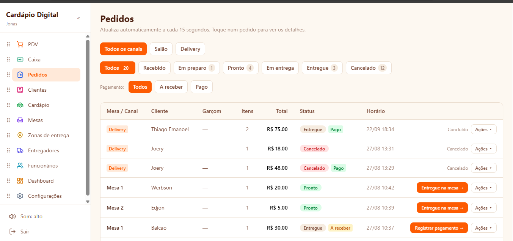
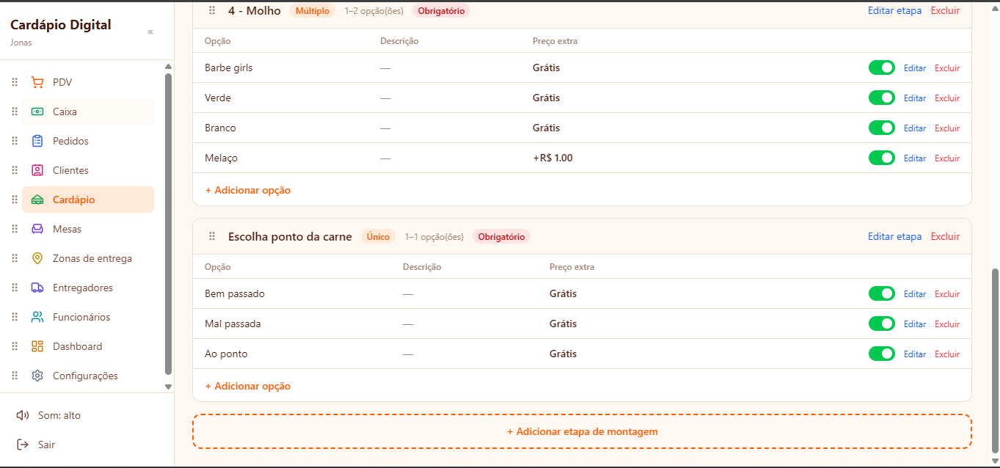

Plataforma de gestão para restaurantes: cardápio online com QR Code individual por mesa, comanda por mesa e por pessoa, delivery, controle de estoque e montagem personalizada de pratos — tudo sincronizado em tempo real.
Projeto próprio, nascido de um problema comum em restaurantes: o pedido anotado no papel se perde entre o salão, a cozinha e o caixa. Quando a mesa tem várias pessoas, ninguém sabe ao certo quem pediu o quê, e a conta vira uma discussão no fim.
A plataforma substitui a comanda de papel por um cardápio acessível via QR Code individual por mesa. Cada pessoa pede pelo próprio celular, o pedido entra identificado por quem fez, e o status acompanha o prato até a entrega — com o mesmo fluxo valendo também para delivery.


Backend em Node.js com TypeScript, usando Prisma ORM sobre PostgreSQL, e frontend em React. O modelo relacional é essencial aqui: pedido, item, opções de montagem, mesa, pagamento e movimentação de estoque formam uma cadeia em que uma inconsistência vira prejuízo direto — por isso cada pedido é gravado em transação junto à baixa de estoque.
A camada de tempo real usa WebSocket. Cozinha, salão e caixa olham para o mesmo pedido ao mesmo tempo, e cada mudança de status é empurrada para todos os painéis conectados. Sem isso, o garçom descobriria que um prato ficou pronto apenas no próximo recarregamento da página, que é exatamente o atraso que o sistema se propõe a eliminar.
As imagens dos itens do cardápio ficam no Cloudflare R2, com API compatível com S3 e sem taxa de egresso — as fotos são servidas a cada cliente que abre o cardápio pelo QR Code, então o custo de saída seria o gargalo de qualquer alternativa. A confirmação por e-mail é feita com o Resend, escolhido por entregar autenticação de domínio e boa taxa de entrega sem exigir a operação de um servidor de e-mail próprio.
Modelar a montagem personalizada de pratos foi a parte mais interessante: era preciso uma estrutura genérica o bastante para o restaurante criar qualquer etapa (ponto da carne, molhos, adicionais) sem alterar código, mas que ainda assim validasse as regras no servidor e calculasse o preço final corretamente. Também aprendi na prática a lidar com estado compartilhado em tempo real: reconexão de clientes, pedidos que mudam de status enquanto alguém está com a tela aberta, e conciliação entre o que o painel mostra e o que está de fato no banco.